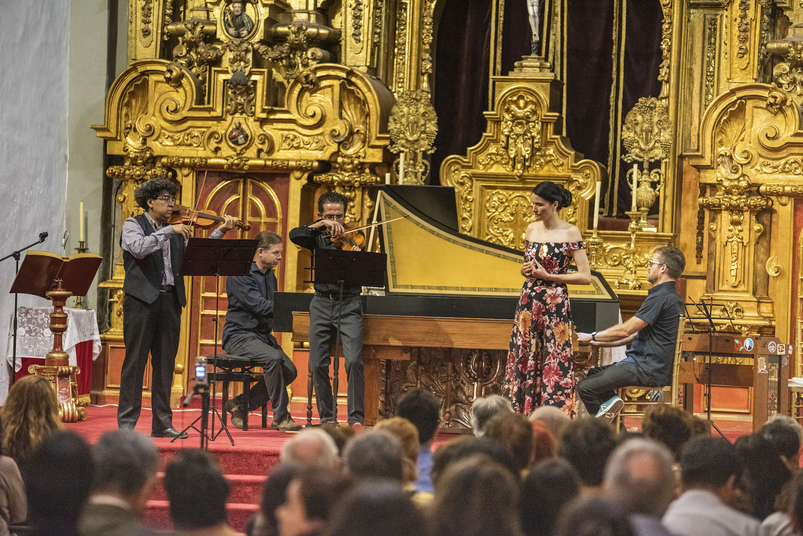
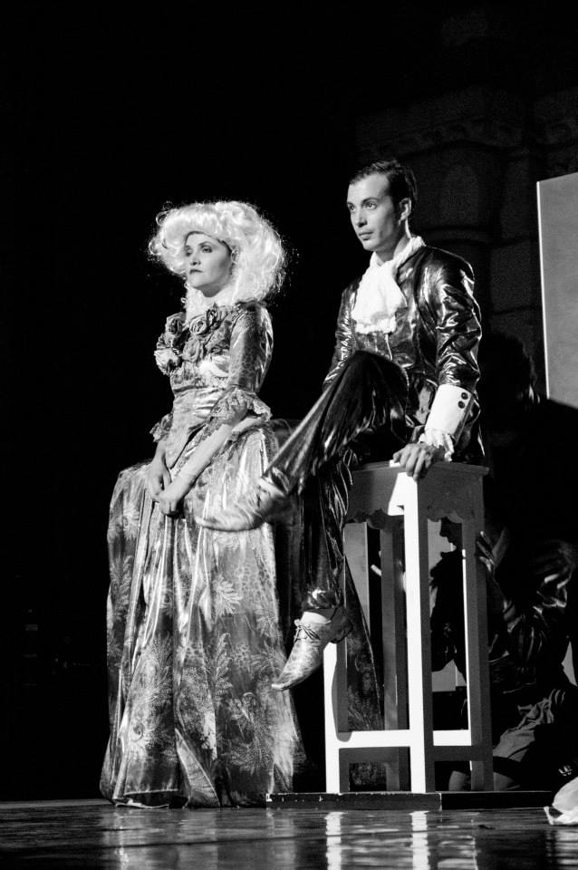
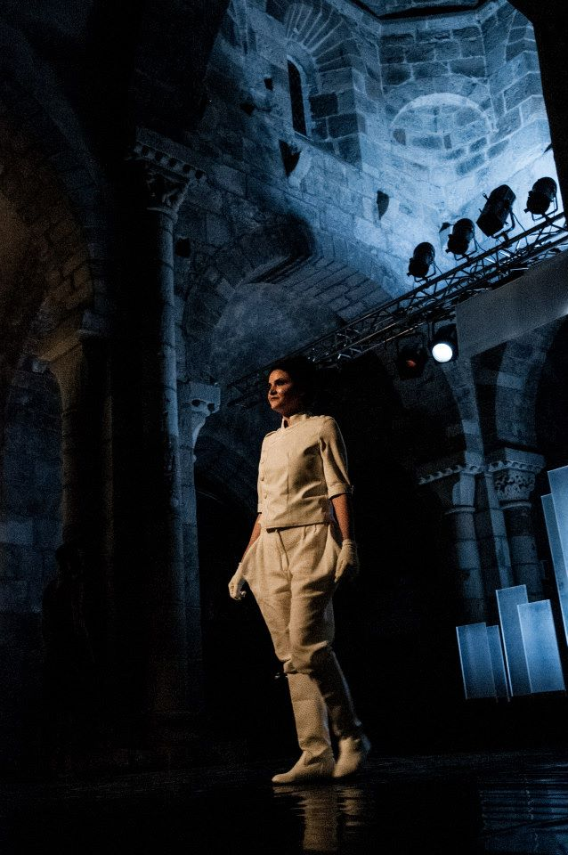
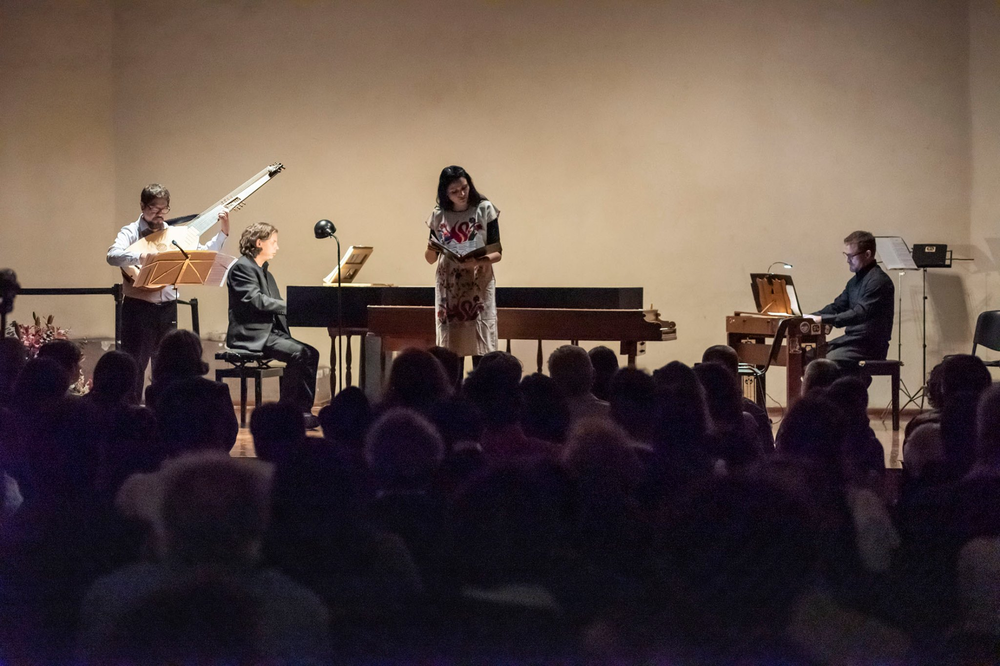
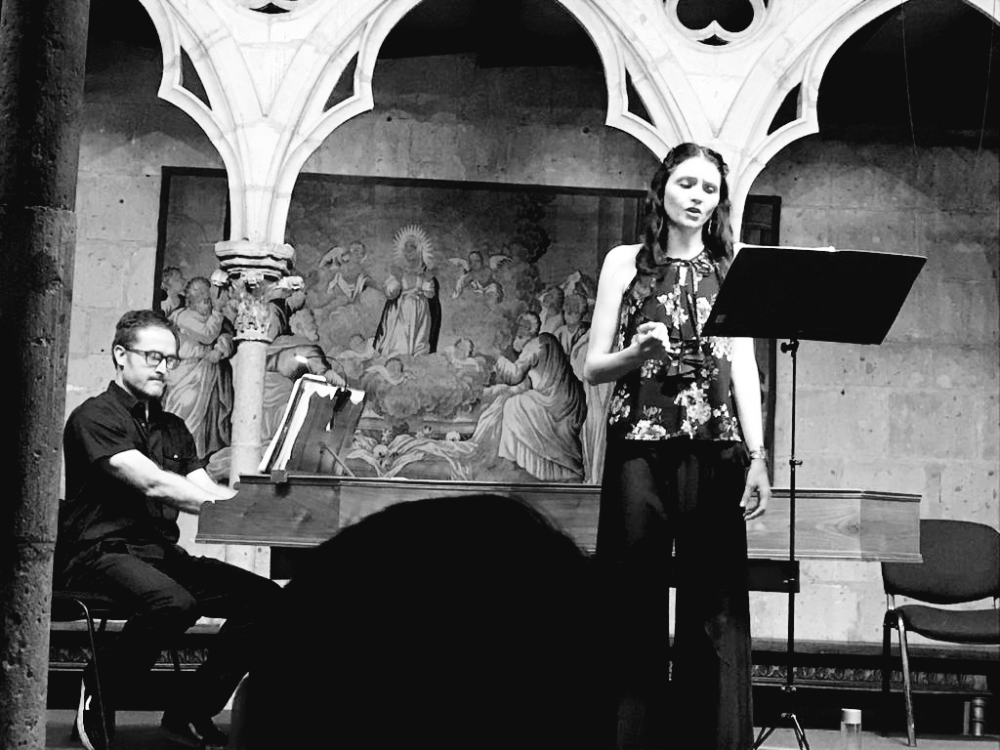
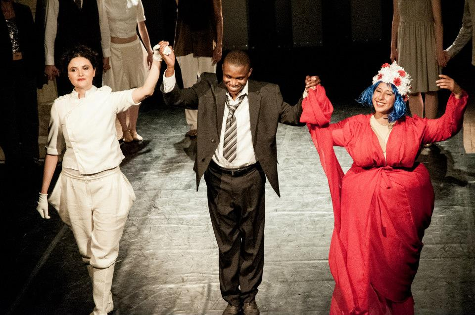

Mezzosoprano · México
Nurani
Huet
Voz antigua en el mundo contemporáneo.
Cantata, Ópera, Oratorio y Música Medieval.
Descubrir
Mezzosoprano · México
Voz antigua en el mundo contemporáneo.
Cantata, Ópera, Oratorio y Música Medieval.

Fotografía de concierto
Trayectoria
Mezzosoprano egresada del Conservatorio Nacional de Música de México, Nurani Huet amplió su formación en el Koninklijk Conservatorium de La Haya, Países Bajos, bajo la guía de Peter van Heyhgen, Eric Mentzel, Jill Feldman y Maria Acda.
Graduada de la especialidad Medieval Music Research and Performance en Medieval Music Besalú y la Universitat de Lleida, España, su trayectoria como solista se ha concentrado en la Cantata, la Ópera y el Oratorio del Barroco, así como en la Música Medieval.
Ha cantado en los principales recintos de México y en ciudades de Francia, España, Lituania y Países Bajos. Ha colaborado con ensambles como Cappella Barroca de México, Armonicus Cuatro, Equinox Project (Francia) y Liminar.
Durante nueve años estuvo al frente del Taller de Música Antigua para cantantes en el Conservatorio Nacional de Música. Actualmente es integrante del Coro de Madrigalistas del INBAL, tutora de la Academia de Música Antigua de la UNAM y titular del Taller de Música Medieval en la Facultad de Música.
Presencia internacional
México
Francia
España
Lituania
Países Bajos
Repertorio
Cantata Barroca
Repertorio
Música Medieval
Repertorio
Ópera
Repertorio
Oratorio
Proyecto propio
Fundado por Nurani Huet, Medieval MX es un proyecto artístico y académico dedicado a la interpretación, investigación y difusión en México de los repertorios tardomedievales y renacentistas tempranos.
La iniciativa recupera músicas de los siglos XII al XVI y las lleva a escenarios contemporáneos con rigor histórico y sensibilidad viva, acercando el pasado sonoro a nuevos públicos.



Galería




